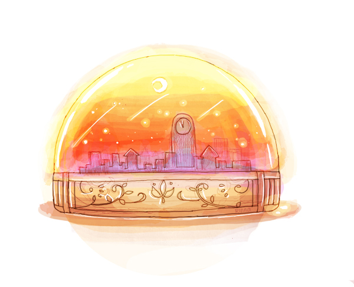

第一幕 ・ 夜鳥初啼
03

「沒有陽光的話，就自己創造一個吧。」
點亮了燈火，一樓被溫暖的燈光所填滿，擺在牆邊的鐘面映照的光而閃爍著金黃色。
在沒有星星的永夜，沒有名字的商店營業中。
……
楚歌挑著眉望著眼前的景象，珀香臉上掛著一如往常的溫和笑容，打有金魚花樣的和服衣襬後露出幾搓淺褐色的短髮。
這是在幹嘛，終於要轉行當保姆了嗎？
楚歌盯著眼前笑容滿面的少女，好似要把對方燒出洞來看看她到底在賣什麼藥。
「楚歌，別這樣。」珀香紫紅色的長髮束在腦後，並隨著她轉頭的動作而飄動，「你嚇到小客人了。」
男孩怯怯地抓著珀香，露出小小的腦袋，黑亮的眸子眨巴眨巴地望向楚歌。
「客人？」語音並沒有因疑問而上揚，楚歌雙手支在腰上、些微傾身，逼視男孩與自己視線相交。
「你想要什麼？」
「白……」
「？」
男孩的嗓音低低小小的，似乎不是害怕，只是在思考開怎麼稱呼它。
楚歌得不到答案而微鼓起臉，接著抬頭看向珀香，「妳該不會真要我做保姆吧？我辦不到喔。」
珀香為此掩嘴笑了出來，「不，如果要做保姆的話果然還是……」
「什麼態度啊。」楚歌不太滿意地半瞇起眼，「麻煩，非我做不可嗎？」
「這當然是因為，有些東西不是楚歌的話是辦不到的。」
「那真是榮幸呢。」敷衍著一來一往，楚歌拉長了音節，「那也要看我的意願吧？」
「啊，這麼說是不想還租金，準備白吃白喝然後理所當然地住下來囉。」珀香毫無退讓之意，只是帶著微笑狠狠地戳了一下楚歌的痛處。
「所以我說到、底、要做什麼啊。」楚歌一字一句咬牙切齒，難道沒有人知道她最討厭不甘不脆的東西了嗎？
「白天！」男孩意識到眼前兩個人開始一來一往地聊了起來，忽然放大了數倍音量大喊。
咚！
收回敲了男孩一記腦袋的拳頭，楚歌不滿地盯著對方，「不要用喊的，玻璃會碎掉。」
說出不知道是恐嚇還是玩笑的言論。
「還不是姊姊們自顧自地聊起來了……」反駁似地小聲說著，男孩摸著自己的頭。
聞此楚歌卻笑了。
「哦？這下子倒很會說話嘛。」楚歌打量了下對方，轉而蹲下來，一手撐著下顎望向對方，「好了，讓你想的也夠久了，再認真說一次你的委託吧。」
「我想要，看到白天。」男孩認真無比地說著。
「辦不到。」楚歌一秒簡潔回答。
「嗚……」聽到答案，男孩的眼眶瞬間積滿了淚水，小小的眉頭皺在一起，咬著牙似乎試著要控制幾乎要奪眶而出的眼淚。
「再說了，你打算拿什麼來支付呢？」楚歌並沒有因此心軟，只是和小小的孩子認真地詢問著。
「沒有問題，這孩子存了點碎銀，你不必擔心。」珀香望著那隻緊緊捏著自己裙擺的小手，又看向楚歌。
「我不需要碎銀。」楚歌伸手，在男孩耳邊輕輕一彈指，接著攤開掌心，幾顆細碎的銀塊躺在其中。
「明白了嗎。」何況她吃住都在鏡雲，實在沒什麼好擔心的。
「再者。」楚歌呼出了口氣，斬釘截鐵，「永夜城裡沒有太陽，所以不會有白天。」
語落她指了指自己的腦袋，「即使我看過白天，也沒辦法撥放給你看。」
她直接扔下死牌，「所以不要白費力氣了，不可能的。」
而後站直身子環起手，楚歌冷漠地望著極力壓抑淚水的男孩，接著轉頭將目標移向珀香，「妳也是，不要隨便答應人家。」
「即使我知道白天的模樣，並不代表我能夠變出來吧。」
「是嗎？」珀香拍了拍男孩的頭，「我以為是楚歌的話，沒什麼辦不到的呢。」
「能力是一回事，事實是一回事。」面對珀香的激將法，楚歌不以為意。
「總之，請回吧。」楚歌揮了揮手，打算趕走難得指派給自己的小小委託人。
她卻不知道，這才是惡夢的開端。
楚歌打開門正準備抬腳走出去。
「大姊姊——」淺褐色頭髮晃動。
「……」凝結一秒，關門。
在店內專注地記帳時。
「只要一眼就好？」自身旁冒出頭的小小腦袋。
「你、小鬼！不是委託人給我滾出去！」被嚇一跳的惱羞成怒。
「吶、白天到底長什麼樣子呢？」
「哇啊！」
穿著套頭帽T和長褲走在路上，從巷口撞出來的煩人身影。
「姊姊說的東西我都會付的。」
「拜託……」
「白天會有很多你們說的星星嗎？有向藍寶石的天空？還是紅色的……陽？」講到不知道名字。
「你也給我適可而止吧！」
最後一次的騷擾，楚歌拍桌而怒。
她怒目望著對方，迎來的是整室的沉默，以及那孩子終於盈滿眼眶而墜落的水珠。
那孩子哭得無聲。
他不吵不鬧了，只是安靜地縮成小小一團，偶爾會聽見細碎的抽噎聲，但其餘都被極力地壓下來。
「……」楚歌頭疼地壓著太陽穴，對於小孩，她的耐心是比那些大人來的長些，大概也只有孩子貼了冷屁股後還會一直纏上來吧。
只是讓她忍住不發怒，有其他原因。
「喂。」她睜眼，望著縮成小小一團的男孩，沉聲。
「……為什麼想看見白天。」
男孩抬起頭，在布滿淚痕的臉上，是依舊黑亮的雙眼。
他說，自己是夜居者。
他說，他的父親看不見，卻看的到所謂的『白天』。
他說，父親提到白天時，表情有多麼溫柔慈祥。
那樣溫和且時常說故事給自己的父親，最終被黑暗吞噬了。
「我也想要，看看爸爸說的白天。」
——也想要，再更接近爸爸一點。
「去拜託了很多很多人，也試了所有可以看見白天的傳說，但是沒有用，根本都沒有用！」
「為什麼都被笑呢？為什麼要被罵呢？為什麼不幫忙呢？」
「……為什麼看不到呢？為什麼做什麼都不對？為什麼辦不到？」
男孩的嗓音越漸稀薄，像是硬擠出來一般，小小的拳頭握得緊緊的，眼淚不停、不停地落下來。
「……為什麼，爸爸要這樣就死掉了。」最後一聲支離破碎，男孩的眼淚沾濕了袖口和臉頰。
楚歌望著對方，並沒什麼特別的表情，她歛下眼簾在思忖什麼般。
……
良久，她才不耐嘖了一聲，低聲喃喃，「如果是那個，也不是不行……」
站起身，她自男孩身邊擦肩而過，伸手打開了通往二樓的門，回頭望著男孩，「過來。」
「……？」男孩不解地望著楚歌的動作，眼淚停在眼中要掉不掉的。
「想要的話，就自己過來拿。」
語落，楚歌勾起唇角，「如果不害怕我把你賣掉或殺掉的話。」
「畢竟，你可是吵得我吹掉了很多生意喔。」說到這裡，楚歌的神情出現了可怕的陰影。
「咕！」男孩神色僵硬，逞強地回道，「妳才不敢。」
「嗯？是嗎？」楚歌微笑，「那你再不來，我可要關門了。」
男孩連忙一個撐地起身，半跑半跌地往楚歌的方向去。
走過了走廊，他們彎進了間小小的雜物間，裡頭堆滿各式各樣的東西。
男孩找了個稍微能坐下的地方，被楚歌叮嚀了句：「不准亂動。」
只見那亞麻色頭髮消失在門口。
「不准偷看。」楚歌又不放心地探頭，半瞇起蜜色眼瞳語帶恐嚇。
時間滴滴答答地過去，在二樓有股好聞的味道，若有似無的清香，是不細聞就聞不出的花香。
男孩打了個呵欠，心裡想的是那個大姊姊真的可靠嗎？
不過自己就這樣睡著的話，會不會真的被賣掉？
……
滴、答。
……但是。
男孩輕輕捏起手，如同祈禱般地抵在額前，「如果、能真的看見就好了。」
答。
規律的鐘錶聲，以及清淺的香味伴入夢鄉。
※
「喂，起床了？」男孩被不太溫柔地晃了晃腦袋，他才轉了轉因睡姿不良而痠痛的脖子。
「睡傻了嗎？」楚歌看著男孩遲鈍的動作，皺眉，「不管了，可要看好囉。」
眨眼，楚歌兀自地說著，接著走到雜物間的燈旁，將之轉熄，黑暗瞬間籠罩了整個房間。
下一秒，某一處的桌燈卻亮了。暈黃暈黃、溫暖的燈光。
楚歌就站在桌旁，燈光照映在她臉上，她朝男孩說著，「來啊。」
男孩不明所以地乖乖照辦，爬上有些搖晃的木椅，望著空無一物的桌子，疑惑。
楚歌輕笑了聲，一聲清脆的聲響輕撞桌面，在明亮的燈光下玻璃球內流轉著夕陽般的光芒。
那是一個小小的城市，落日的顏色染滿了玻璃球內的天空，漂浮在那果凍狀物體中的是仿若星子般的細碎寶石和亮粉。
「這就是，我世界中的黃昏喔。」楚歌微笑地望著玻璃球，燈光將她的眸子也染成了黃昏的色澤。
「我們的白天，是彩色的。」她輕聲說著，彷若在懷念著什麼，「天剛亮時，地平線和天空的交接處會開始泛白。」
「漸漸的，藍色會像水彩一樣染滿整個天空，到了黃昏，天空的色澤慢慢的沉澱。」
「金黃色的、亮橘色的、鮮紅色的、紫羅蘭色的、深藍色的……」
男孩望著玻璃球出神，屏著氣，似乎就怕呼出一口氣就會將整片天空吹散一樣。
「到了夜晚，鳥兒會唱歌。天空像灑滿糖果一樣充滿了星星。」
「月亮有時候會露出臉，有時候不會。月亮就是一個會變尖變圓的大盤子喔。」用著有些爛的形容說著，楚歌緩了緩呼吸。
「這些就是我記憶中的天空。」她撐頰，輕輕敲了敲玻璃球，發出細碎的叮叮聲響。
「……但我想，你父親所看到的景色，一定比這些都還要美麗。」
楚歌轉頭凝視著男孩，臉上帶著比平時還要溫和的笑容，「絕對。」
※
將男孩送到了店門口，只見男孩緊緊抓著玻璃球，那之中的光線流轉，他望著所謂的『夕陽』的顏色。
「那個……把這個給我真的沒關係嗎？」男孩有些不安。
「當然有關係。」楚歌雙手插腰，毫不隱諱地答道，「如果被發現的話，我絕對會被罵死的……不對，搞不好還會被殺掉。」
楚歌擺出了苦惱又困擾的表情，接著眨了眨眼，用慎重用小心翼翼的語氣接著說：
「所以，就把這個當作是我們之間的祕密吧？」
男孩驚訝地抬頭，「不收錢嗎？」
「不用，但是不能講。」
男孩把那玻璃球朝自己又抓緊了點，有些提防地望著，「不能說？」
「不能說。」楚歌微笑。
「哥哥和媽媽呢？」
「哥哥和媽媽也不可以。」加重了語氣。
楚歌眨了眨因染上暈黃燈光而有如同黃昏燦陽的眸子，「怎麼樣，做得到嗎？」
「……」男孩沉默，如果可以，他也想讓家人看看所謂的『陽光』。
楚歌嘆了口氣，她可不希望這種白做的生意傳出去啊……於是她伸出食指說教似地接著說話。
「這個，是只有你才看得到的白天。」她指了指男孩胸前的玻璃球，「——屬於你自己的陽光。」
「被人看見的話，是會消失的。」笑意中帶著些微的恐嚇，男孩聽到這裡嚥了口口水，手指又抓緊了些。
「好嗎？」她笑了。
「嗯，我不會說的。」如同訂下了什麼誓言，燈光下男孩的眼神堅定萬分，抱著玻璃球如同珍寶。
微微笑著揮手目送男孩離開，楚歌才微仰頭，交疊著雙手使勁伸直，伸了個懶腰，「呼。」
「想做的話也做的挺好的嘛。」涼涼的聲音自她身後傳來，楚歌根本不用回頭就知道是鏡雲。
「是你告訴那孩子我的行蹤的吧。」楚歌插著腰，微微偏頭望向後方，並沒有帶著怒氣。
「誰知道呢？」鏡雲好像是笑了，「不過、那種『陽光』不如多做些來賣人吧？」
「看心情，再怎麼說那可是限量品呢。」楚歌將雙手枕在腦後。
「如果隨便都夠得到，也不會想要了吧？」她意有所指地說著，接著放下手轉過身，「這個妳應該最清楚才對。」
「確實呢。」鏡雲垂下眼。她想看見白晝、應該就如同楚歌說的，未曾見雪的人們、期待大雪的降臨吧。
「好了，我要進去了。」兩人有一搭沒一搭地聊著，楚歌卻忽然腳步一滯，她微微側頭，好似聽見了什麼，「……？」
「怎麼了嗎？」鏡雲開好門，一腳已經踏進屋內。
「沒有，只是聽見了鳥的聲音。」楚歌深吸了口氣再呼出來。
「一瞬間還以為天就要亮了呢。」
「呵、那應該是這個世界最期待的事。」鏡雲笑了聲。
走進屋內輕輕地將門關上，以及清脆的上鎖聲。
無名的商店熄了燈，夜晚的街道也稍稍地黯淡了幾分。